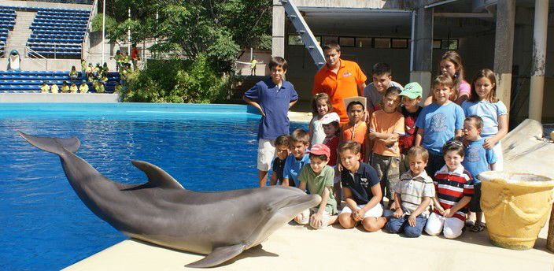

Esta actividad acerca al visitante a los delfines y su manejo en la instalación, a través de una experiencia con parte teórica y parte interactiva, en la que, entre otras cosas, se llevarán una foto de grupo con los delfines. Al final, se trata sobre todo de que conozcan más de cerca el mundo de los mamíferos marinos. La actividad consta de tres partes:
Introducción en las Aulas de Educación con una charla de un biólogo que cuenta los secretos de los delfines.
Visita a las instalaciones del Delfinario. Se muestra la zona técnica del delfinario.
Piscinas de cuarentena. Charla con los entrenadores de los delfines.